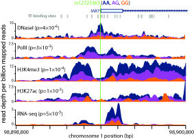

The McVicker Laboratory is located at the Salk Institute for Biological Studies in beautiful La Jolla, California. We are part of the Laboratory of Genetics and the Integrative Biology Laboratory. We are also part of the Bioinformatics and Systems Biology program at UCSD.
 Our laboratory studies human genetic variation and chromatin. Chromatin is critical for correct cell-type specific gene regulation, and its disregulation is associated with many human diseases including cancer. To understand how chromatin state and organization are encoded by the human genome, we use naturally occurring genetic variation to discover sequence variants that disrupt chromatin function. In much of our research, we develop of sophisticated computational and statistical methods so that we can extract subtle signals from noisy experimental data.
Currently, we are using human genetic variation to answer three broad questions. Which sequence elements and nuclear factors specify chromatin state and organization? How are cell-type specific chromatin organization and gene regulation encoded by the genome? How does regulatory variation in immune cells affect the basic functions of our immune system and our susceptibility to disease?